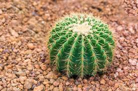

Cellular Respiration
The core of energy in cauts and in our body
Meaning of Cellular Respiration
Cellular Respiration is a process that cells use to break donwn glucose and produce energy in the form of ATP. It occurs in three main stage:Glycolysis, the Krebs Cycle, and the electron Tranport Chain
1. Glycolysis

2. Krebs Cycle
3. Electron Transport Chain